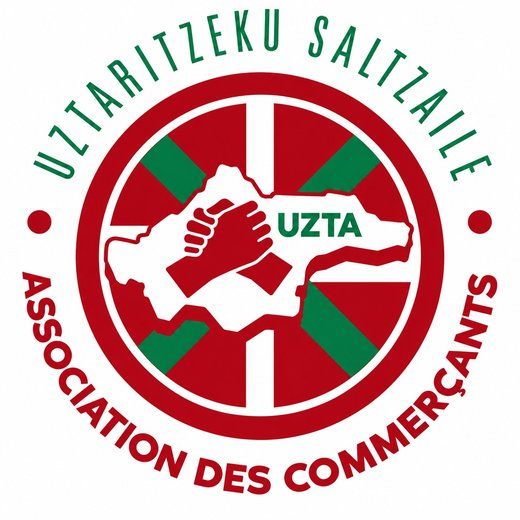

Tu cherches un commerçant
ou un artisan de confiance
à Ustaritz, mais tu ne sais pas
vers qui te tourner ?
Découvre les commerçants, artisans et
professionnels d'Ustaritz réunis au sein de
l'association UZTA.
Des professionnels près de chez toi, des
savoir-faire locaux et des visages à découvrir.
Pourquoi chercher ailleurs quand le bon professionnel est peut-être à Ustaritz ?
Tu as besoin d'un artisan, d'un commerçant ou d'un service, mais tu ne sais pas qui contacter.
Alors tu cherches sur Google, tu compares les résultats et tu demandes conseil autour de toi, sans toujours trouver la bonne personne.
Je trouve un professionnel près de chez moiCombien de professionnels d'Ustaritz connais-tu vraiment ?
Tu passes peut-être chaque jour devant des commerces sans connaître les personnes qui y travaillent ni les services qu'elles proposent.
Et lorsque tu as besoin d'un professionnel, tu risques de chercher ailleurs alors que la solution se trouve parfois à quelques minutes de chez toi.
Je découvre les savoir-faire locauxDerrière chaque commerce d'Ustaritz, il y a un visage et un savoir-faire !
L'association UZTA réunit des commerçants, artisans et professionnels d'Ustaritz qui participent à la vie de notre commune.
Opticiens, caviste, photographe, bouchers, professionnels de l'immobilier et bien d'autres : découvre leurs métiers, leurs activités et les personnes qui les font vivre.
Tous les commerçants et artisans d'Ustaritz à découvrir au même endroit !
Plus besoin de multiplier les recherches pour découvrir les professionnels membres de l'association UZTA.
Retrouve leurs activités, découvre leurs savoir-faire et trouve plus facilement le professionnel qui répond à tes besoins.
Parce que choisir un professionnel près de chez soi, c'est aussi contribuer à faire vivre les commerces et les savoir-faire de notre commune.
À Ustaritz, les bonnes adresses sont parfois juste à côté de chez toi !
Je découvre les commerçants et artisans d'Ustaritz